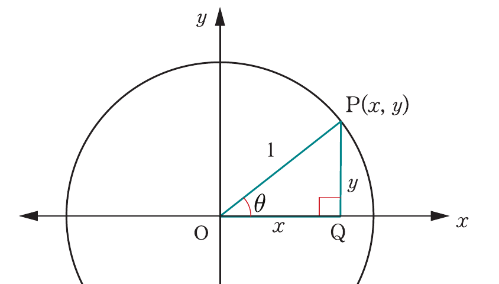

Trigonometric ratios of any angle
To understand trigonometric ratios of any angle, it is important to go beyond right-angled triangles. By using the unit circle and the Cartesian coordinate system, these ratios can be defined for any angle, making it easier to explore relationships between angles.
Engage in Activity 8.2 to explore the relationship of sides, lengths, and angle of a triangle.
Consider a circle of unit radius subdivided into four congruent sectors by the coordinate axes whose origin is at the centre of the circle as shown in Figure 8.7.

Let be any acute angle located in the first quadrant and be a point on the circle with coordinates , where is the radius of the unit circle.
The trigonometric ratios in this circle can be obtained by using the lengths of sides of a right-angled triangle OPQ as follows: